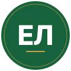
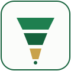
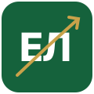

Логотип — 3 концепта
Все три варианта работают в фирменной палитре сайта: тёмно-зелёный #15623C, основной зелёный #1E7F4F и золотистый акцент #C9A24A.
Каждый показан в трёх вариантах: на светлом фоне, на тёмном и на брендовом зелёном. И в двух размерах — крупно (как в hero / на визитке) и в обычном размере шапки (40×40).
1. Монограмма «ЕЛ» в круге
Минималистичный знак: тонкая золотая окантовка + золотая линия-подложка под буквами. Развитие текущего лого. Универсален, читается на favicon, легко переводится в гравировку / печать.
На светлом

Егор Лукшо
40 px — как в шапке
На тёмном
Егор Лукшо
40 px
На брендовом
Егор Лукшо
40 px
Плюсы
- Эволюция текущего — клиенты, видевшие сайт, узнают
- Хорошо читается в маленьком размере
- Универсален: подойдёт для печатной продукции, презентаций
Минусы
- Меньше всего «рассказывает» о продажах — это просто инициалы
- Похож на сотни других «человек-эксперт» логотипов
2. Воронка продаж
Графический знак — стилизованная воронка продаж (три уровня сужения) с точкой-«закрытой сделкой» внизу. Сразу считывается профессия. Идёт в паре с типографикой имени.
На светлом

Егор Лукшо
40 px — как в шапке
На тёмном
Егор Лукшо
40 px
На брендовом
Егор Лукшо
40 px
Плюсы
- Прямая визуальная метафора — сразу видно, чем занимается
- Запоминается, отличается от «человек + инициалы»
- Хорошо работает как иконка в соцсетях, аватарках
Минусы
- Без слов теряет узнаваемость — всегда нужна типографика имени рядом
- «Воронка» — типовой образ, может быть у конкурентов
- На брендовом фоне нижний золотой блок может теряться
3. Монограмма + стрелка роста
Квадратный знак с инициалами «ЕЛ» и золотой стрелкой, проходящей по диагонали — метафора роста выручки/команды. Сочетает узнаваемость (буквы) и смысл (рост).
На светлом

Егор Лукшо
40 px — как в шапке
На тёмном
Егор Лукшо
40 px
На брендовом
Егор Лукшо
40 px
Плюсы
- Двойное считывание: инициалы + рост
- Стрелка задаёт динамику — отличается от статичных «эксперт-логотипов»
- Цветовой акцент — золотая стрелка на зелёном квадрате очень эффектна
Минусы
- В маленьком размере (16-20 px favicon) стрелка может «зашуметь»
- «Стрелка роста» — тоже частая метафора в бизнес-логотипах
После выбора — заменим текстовый «ЕЛ» в шапке на выбранный SVG и сделаем favicon в нужных размерах (16, 32, 180, 512).